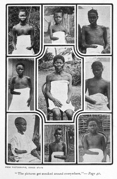
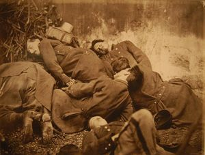

Crímenes del capitalismo - La web de emijrp
En esta página me propongo recopilar los crímenes cometidos por estados y regímenes capitalistas, así como aquellos llevados a cabo como consecuencia de sus políticas imperialistas y colonialistas en todo el mundo.
Los países capitalistas no escatiman esfuerzos ni recursos en asesinar, encarcelar, torturar, mutilar y aterrorizar a la población para mantener los privilegios de las minorías que ostentan el poder económico. En algunos casos, lugares y épocas la represión es aplicada a grandes grupos de personas, mientras que en otros se aplica de forma selectiva.
Como dijo el líder revolucionario Ché Guevara «el capitalismo es el genocida más respetado del mundo». Sirva esta página para que sus crímenes no caigan en el olvido y para recordar a sus víctimas.
| Tabla de contenidos |
|---|
|
1. África 1.1 Angola 1.2 Argelia 1.3 Burkina Faso 1.4 Egipto 1.5 Libia 1.6 Marruecos 1.7 República Democrática del Congo 1.8 Sáhara Occidental 1.9 Sudáfrica 1.10 Sudán 2. América 2.1 Argentina 2.2 Bolivia 2.3 Brasil 2.4 Canadá 2.5 Chile 2.6 Colombia 2.7 Cuba 2.8 Ecuador 2.9 El Salvador 2.10 Estados Unidos 2.11 Guatemala 2.12 Honduras 2.13 México 2.14 Nicaragua 2.15 Panamá 2.16 Paraguay 2.17 Puerto Rico 2.18 Perú 2.19 República Dominicana 2.20 Uruguay 2.21 Venezuela 3. Asia 3.1 Afganistán 3.2 Bangladesh 3.3 Camboya 3.4 China 3.5 Corea del Norte 3.6 Corea del Sur 3.7 India 3.8 Irán 3.9 Iraq 3.10 Israel 3.11 Japón 3.12 Laos 3.13 Malasia 3.14 Rusia 3.15 Siria 3.16 Vietnam 3.17 Yemen 4. Europa 4.1 Alemania 4.2 Austria 4.3 España 4.4 Francia 5. Oceanía 5.1 Australia 5.2 Indonesia 6. Asesinatos selectivos 7. Referencias |
África
República Democrática del Congo
| manos mutiladas, entre ellos niños, por no haber recogido la cantidad estipulada de caucho." title="Víctimas con las manos mutiladas, entre ellos niños, por no haber recogido la cantidad estipulada de caucho." /> |
| Víctimas con las manos mutiladas, entre ellos niños, por no haber recogido la cantidad estipulada de caucho. |
{kind=link}
- 1885-1908: En este período el territorio que hoy comprende la República Democrática del Congo era gobernado por el rey Leopoldo II de Bélgica y tenía el nombre de Estado Libre del Congo. Durante estos años, el territorio sufrió una explotación sistemática e indiscriminada de sus recursos naturales (especialmente marfil y caucho), en la que se utilizó exclusivamente mano de obra indígena en condiciones de esclavitud. Las empresas que obtuvieron las principales concesiones monopolísticas fueron la Sociedad de Amberes de Comercio del Congo (Société Anversoise du Commerce au Congo) y la Compañía Anglo-Belga del Caucho y la Exploración (Anglo-Belgian India Rubber and Exploration Company) en las que Leopoldo y otros capitalistas tenían una importante participación directamente o por medio de testaferros. Para mantener su control sobre la población nativa, la administración colonial instauró un régimen de terror en el que fueron frecuentes los asesinatos en masa y las mutilaciones. Debido a esto y otros factores relacionados, hubo un elevadísimo número de víctimas mortales estimadas entre 5.000.000 y 10.000.000 de muertos.[1] Aquellos que se resistían a trabajar como esclavos eran asesinados y pueblos enteros arrasados. Los que no recogían la cantidad estipulada de caucho se les amputaban las manos, ya fueran adultos o niños. Niños de hasta 5 años eran mutilados delante de sus padres.[2]
América
Chile
| Palacio de La Moneda, sede del Presidente de la República de Chile, siendo bombardeado por los militares golpistas en 1973." title="El Palacio de La Moneda, sede del Presidente de la República de Chile, siendo bombardeado por los militares golpistas en 1973." /> |
| El Palacio de La Moneda, sede del Presidente de la República de Chile, siendo bombardeado por los militares golpistas en 1973. |
{kind=link}
- 1973-1990: El 11 de septiembre de 1973 el militar Augusto Pinochet da un golpe de estado en Chile, bombardeando el Palacio de la Moneda, contra el gobierno legítimo del socialista Salvador Allende y la Unidad Popular elegidos en las urnas. Este golpe de estado recibió el apoyo de los Estados Unidos y el régimen que surgió de él aplicó políticas neoliberales, además de cometer todo tipo de atrocidades contra el pueblo chileno. Según los informes de la Comisión Nacional de Verdad y Reconciliación y la Comisión Nacional sobre Prisión Política y Tortura, el número de víctimas directas de violaciones de derechos humanos en Chile es de al menos 35.000 personas: 28.000 fueron torturadas, 2.279 asesinadas y 1.248 siguen desaparecidas. Además unas 200.000 personas sufrieron exilio y un número indeterminado ha pasado por centros clandestinos y de detención ilegal. Entre las víctimas mortales se encuentran el propio presidente de Chile Salvador Allende, así como miembros de su gobierno, sindicalistas, obreros y estudiantes.
Colombia
- 1977-Actualidad: Desde 1977 han sido asesinados en Colombia más de 3.000 sindicalistas. Desde el año 2002 suman 791 asesinatos. El 94,4% de estos crímenes no han sido juzgados. El número de amenazas de muerte no disminuye.[3] También se han contabilizado 216 desapariciones forzadas, 83 casos de torturas y 163 secuestros de sindicalistas, aunque estas cifras se consideran incompletas.[4]
El Salvador
| José Feliciano Ama, líder campesino al que los terratenientes le robaron sus tierras, ahorcado por el ejército." title="José Feliciano Ama, líder campesino al que los terratenientes le robaron sus tierras, ahorcado por el ejército." /> |
| José Feliciano Ama, líder campesino al que los terratenientes le robaron sus tierras, ahorcado por el ejército. |
{kind=link}
- 1932: El régimen dictatorial de Maximiliano Hernández Martínez ahoga en sangre una rebelión campesina que pedía mejoras salariales y soluciones para el problema de la concentración de la tierra en manos de los ricos. Solo entre 30 y 40 familias eran dueñas de casi todo el país. El ejército, superior en armas y soldados, asesinó a más de 10.000 campesinos mediante fusilamientos.[5][6] Los hechos se recogen el documental 1932, Cicatriz de la Memoria.[7] El líder campesino José Feliciano Ama, al que los terratenientes le habían robado sus tierras, participó en la rebelión siendo capturado y ahorcado.
En El Salvador, el Museo de la Palabra y la Imagen recoge la historia de luchas del pueblo salvadoreño.[8][9]
Asia
Europa
Francia
| Comuneros ejecutados." title="Comuneros ejecutados." /> |
| Comuneros ejecutados. |
{kind=link}
- 1871: El ejército francés reprime la Comuna de París a sangre y fuego provocando 20.000 muertos. Miles fueron condenados a penas de prisión, trabajos forzados o deportados a Nueva Caledonia. Otros lograron escapar y marcharon al exilio.
Oceanía
Asesinatos selectivos
Esta sección recopila los más destacados asesinatos selectivos consumados o en grado de tentativa por distintos países capitalistas contra líderes o personalidades de todo el mundo.
- Salvador Allende:
- Fidel Castro:
- Muamar Gadafi:
- Che Guevara:
- Patrice Lumumba:
- Rosa Luxemburgo:
- Thomas Sankara:
Referencias
- ↑ Atrocities in the Congo Free State
- ↑ Category:Nsala of Wala with the severed hand and foot of his five year old daughter
- ↑ Colombia: el país más peligroso para ser sindicalista
- ↑ La impunidad arropa los asesinatos de 2.800 sindicalistas colombianos
- ↑ 1932 Salvadoran peasant massacre
- ↑ El Salvador: Memoria histórica y organización indígena
- ↑ 1932, cicatriz de la memoria
- ↑ Museo de la Palabra y la Imagen
- ↑ Museo de la Palabra y la Imagen en YouTube
 |
Esta página fue modificada por última vez el 2018-08-26 13:10:46 (UTC) | GitHub pages |